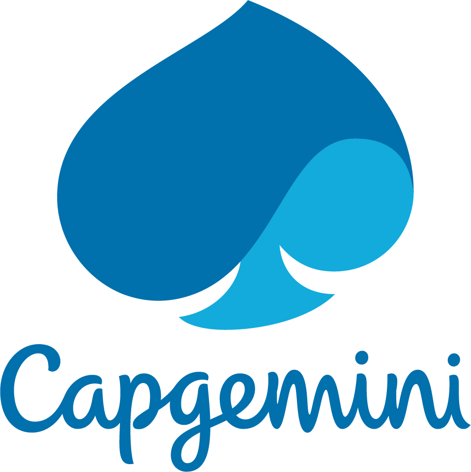
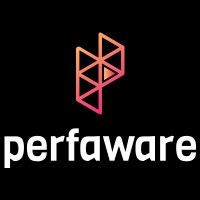

Building enterprise AI agents — real-time voice, multi-agent orchestration, and RAG — at production scale.
I'm a Sr. AI Engineer at T-Mobile USA with over a decade in software engineering, now focused on Agentic AI. I build real-time voice agents on AWS Bedrock with Amazon Nova Sonic and orchestrate multi-agent workflows with Google ADK, AWS Strands, and the MCP (Model Context Protocol) & A2A (Agent-to-Agent) protocols — all in Python with LangChain and RAG. I hold a Post Graduate Degree in Generative AI from UT Austin.
simkeyur@gmail.com · Dallas–Fort Worth, TX
Experience
Sr. AI Engineer (Agentic AI)
T-Mobile USA
- Building real-time voice agents on AWS Bedrock with Amazon Nova Sonic for low-latency, speech-to-speech conversational experiences.
- Architecting enterprise multi-agent systems with Google ADK, AWS Strands, and LangGraph for agent orchestration and stateful workflows.
- Implementing MCP (Model Context Protocol) and A2A (Agent-to-Agent) Protocols for interoperable tool use and cross-agent communication.
- Architected transactional GenAI solutions for HR, reducing ticket resolution time by 50% across 15+ integrated systems serving 50K+ users.
- Productionizing agents in Python with retrieval (RAG), evaluation, and guardrails for reliable, enterprise-grade automation.

Senior Consultant
Sogeti USA (Capgemini Group)
- Led Blockchain development initiatives within the Sogeti Dallas practice, translating complex business and functional requirements into robust software applications.
-
Client: Allied Pilots Association
- Led a project to automate manual member requests, reducing processing time by 60% and creating a verifiable audit trail for compliance.
- Developed a log monitoring solution using Power BI and ASP.NET to track user activity and errors across critical web and mobile applications.
- Architected and developed a hybrid application to enhance the pilot notification system for flight delays, gate changes, and crew updates.

Software Consultant
Perfaware LLC
- Developed UI components for Perfaware's Real-Time Analytics Visibility and Enterprise Monitoring (RAVE) platform, an omni-channel order pipeline monitoring solution for major retailers.
- Designed and developed proof-of-concept (POC) applications for clients, including an order shipment simulator microservice and a Helpdesk Chatbot using IBM Watson.
-
Client: The Home Depot
- Led the design of an inventory availability solution, collaborating with the IBM Engineering team on the first pilot of a Cassandra-based lookup system for e-commerce.
- Developed a custom tool to compare over 1 million SKUs weekly, facilitating a smooth transition from a legacy inventory management system.
- Built a custom dashboard providing return order visibility, significantly improving customer satisfaction with the return process.
Software Developer Intern
Santander Consumer USA
- Modified and wrote new unit tests for international projects using C#, .NET, and Microsoft MS Unit.
- Participated in regular code reviews and performed configuration management duties, including code merging and branching with Tortoise SVN.
Recent Projects
AI Agent Harness
A model-agnostic harness for building, evaluating, and shipping production AI agents. Standardizes tool use over MCP, routes across frontier models, and bakes in tracing, evals, and guardrails so teams can take agents from prototype to production with confidence.
Key Capabilities:
- MCP-native tool orchestration with typed, reusable tool servers
- Multi-model routing across Claude, Amazon Nova, and Gemini
- Built-in evals, tracing, and observability for agent runs
- RAG over company knowledge with role-based access controls
CareerVector
An agentic career platform that turns your full work history into a living, vector-embedded profile, then reasons over it to tailor ATS-ready resumes, surface skill gaps against target roles, and recommend the right next move — all grounded in retrieval rather than generic generation.
Key Features:
- The Vault — centralized, vector-embedded career profile
- Match Engine — RAG-powered, ATS-optimized resume generation
- Gap Engine — role-aware skill gap and readiness analysis
- Learning Agent — live-search curated upskilling paths
A modular event intelligence platform that streamlines the full lifecycle — creation, registration, check-in, and scheduling — and layers AI on top to forecast attendance, personalize communications, and generate content, turning historical and real-time signals into operational decisions.
AI Capabilities:
- Intelligent scheduling & session recommendations
- Predictive attendance & capacity forecasting
- Automated attendee segmentation & outreach
- Real-time analytics with anomaly & sentiment detection
Education
July 2024 — Jan 2026
Post Graduate Degree in Generative AI
The University of Texas at Austin

Jan 2011 — May 2015
Bachelor of Science in Software Engineering
The University of Texas at Arlington
Technical Skills
Currently Working With
- AWS Bedrock
- Amazon Nova Sonic (Voice)
- Google ADK
- MCP & A2A Protocols
- LangGraph & AWS Strands
Agentic AI
- Multi-Agent Orchestration
- Tool Use & Function Calling
- Agent Evaluation & Tracing
- Guardrails & Observability
- LangChain
Generative AI
- Large Language Models
- Agent Orchestration
- RAG Pipelines
Backend
- Microservices
- API Development
- ASP.NET
- Node.js
Cloud & DevOps
- AWS · Azure · GCP
- Docker & Kubernetes
- CI/CD
- Git / SVN · Agile
Data & Web
- Cassandra · MySQL · PostgreSQL
- MongoDB
- Blockchain & Smart Contracts
- Angular / Next.js / Tailwind
Awards & Interests
Awards & Recognition
- Best Agent — Business Impact & Value · Microsoft Connected Agents Summit — 2026
- 1st Place — 2018 Sogeti DevOps Hackathon
- 1st Place — 2013 Nationwide AT&T Coding Challenge
Interests
My primary passion lies in the bleeding edge of Artificial Intelligence. I spend the majority of my free time experimenting with new Large Language Models (LLMs), building autonomous agent workflows, and exploring the potential of Agentic AI to automate complex tasks. Beyond code, I am a lifelong vegetarian and enjoy sustainable gardening, planting and harvesting my own food. I'm also an aspiring chef who loves experimenting in the kitchen, and an avid follower of various sports.